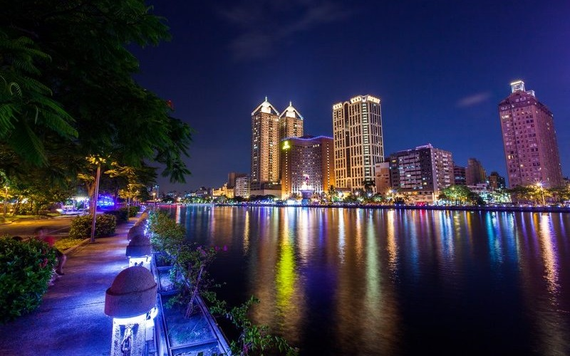
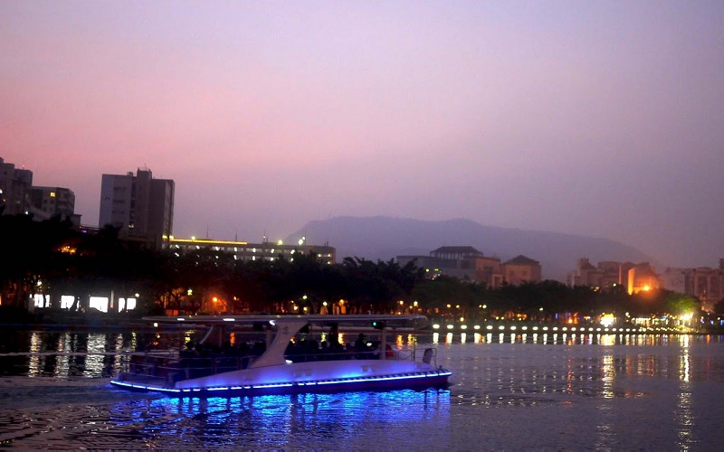
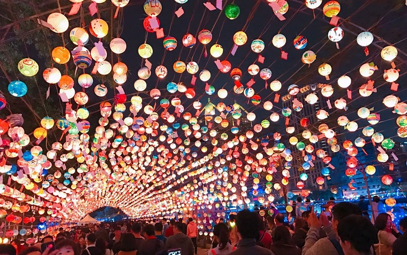
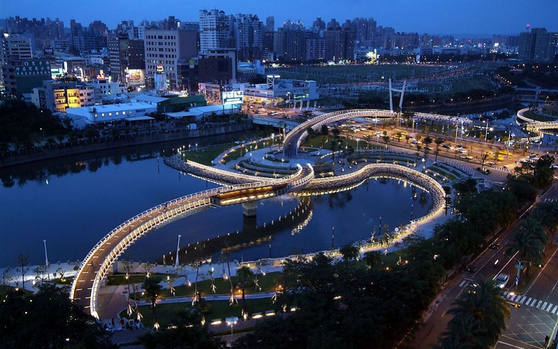
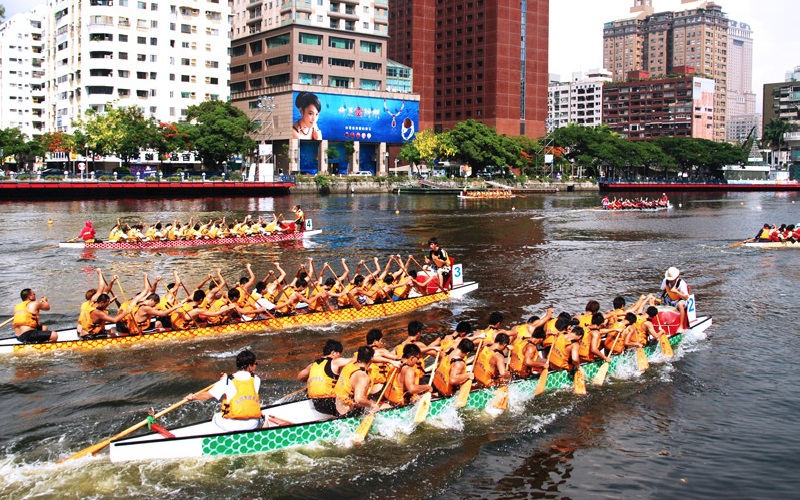

Love River
Kaohsiung City
The Riverside of Love River
   Love River is a canal in Kaohsiung. It was once heavily polluted, when raw sewage and industrial waste water flowed
untreated into the river. Recent efforts by the city government to divert the waste water to the treatment plant in
Chijin District has resulted in significantly improved water quality and develop tourism. Also, many activities are held here,
including the Latern Festival and the Dragon Boat Competition for celebrating the Dragon Boat Festival. Both taking the
Love Boat and strolling at the riverside are recommened ways to experience the beauty of Love River.
- Best seasons: all year around
- Transportation: The nearest Kaohsiung Light Railway Transit station is the Love Pier station.